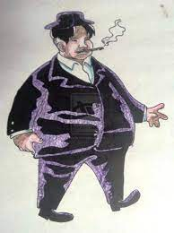

Mga Tauhan ng Noli Me Tangere |
|  |
Kapitan Tiago |
Siya ang mayaman na Kapitan ng Binondo. Siya ay isang Filipino ngunit itinakwil niya ang kanyang lahi. |
|
Crisostomo Ibarra |
Siya ang anak ni Don Rafael Ibarra. Siya ay nagaral sa Europa ng pitong taon. Marunong siya sa maraming wika |
|
Padre Damaso |
Siya ay isang Pransiskanong pari na namuno sa San Diego ng dalawang dekada. Mayabang siya at madaldal. |
|
Padre Sibyla |
Kabilang siya sa mga kurang Dominikano. |
|
Donya Victorina |
Siya ang asawa ni Doktor de Espadana. Filipino siya ngunit tila Kastila siya manamit at kumilos. |